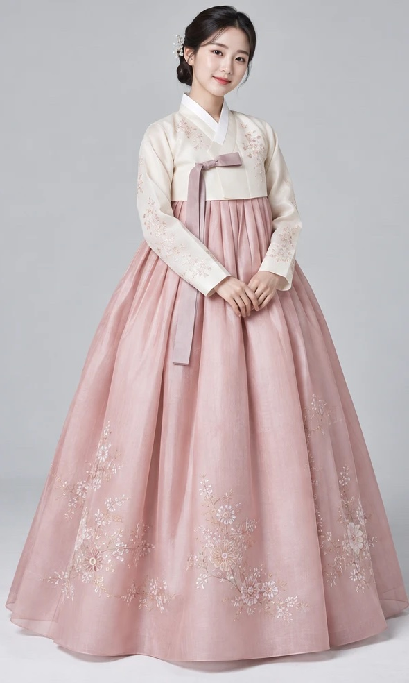

한복, 제대로 알고
입어 볼까요?
부위별 이름부터 입는 순서, 오방색의 의미까지.
5분이면 한복이 훨씬 더 특별해져요.
약 5분
퀴즈 5문제
수료 배지
1. 한복의 구성
사진 위 번호를 눌러 부위 이름을 알아보세요

2. 여자 한복 입는 순서
- 1속치마(또는 속바지)를 입어요
치마가 풍성하고 단정하게 퍼지도록 모양을 잡아 줘요.
- 2치마를 가슴 위쪽에 두르고 끈을 묶어요
치마의 트인 쪽이 뒤로 가게 두르고, 끈은 흘러내리지 않게 단단히 매요.
- 3저고리를 입고 깃을 바르게 여며요
동정이 목에 들뜨지 않고 가지런히 닿는지 확인해요.
- 4고름을 매요
긴 고름으로 고리를 만들어 짧은 고름과 묶고, 긴 쪽이 아래로 길게 늘어지게 정리해요.
- check매무새를 마무리해요
치마 길이는 발등을 살짝 덮게, 저고리 앞선이 비뚤지 않게 다듬어요.
3. 오방색(五方色)
음양오행에서 나온 다섯 가지 기본 색이에요. 다섯 방위와 계절을 뜻하며, 색동저고리나 노리개처럼 한복 곳곳에 담겨 있어요.
4. 한복 입고 고궁 관람 예절
- shield문화유산을 아껴요 · 건물·담장에 기대거나 오르지 말고, 출입 금지 구역은 지켜요.
- photo_camera촬영 규정을 확인해요 · 상업 촬영이나 일부 장비는 사전 허가가 필요할 수 있어요.
- groups다른 관람객을 배려해요 · 좁은 길이나 문 앞에서 오래 머무르지 않아요.
- recycling쓰레기는 되가져가요 · 깨끗한 고궁이 모두의 추억을 지켜요.
5. 한복 퀴즈
1 / 5학습용 요약 콘텐츠예요. 지역·가문·시대에 따라 한복을 입는 방식과 명칭은 조금씩 다를 수 있어요.